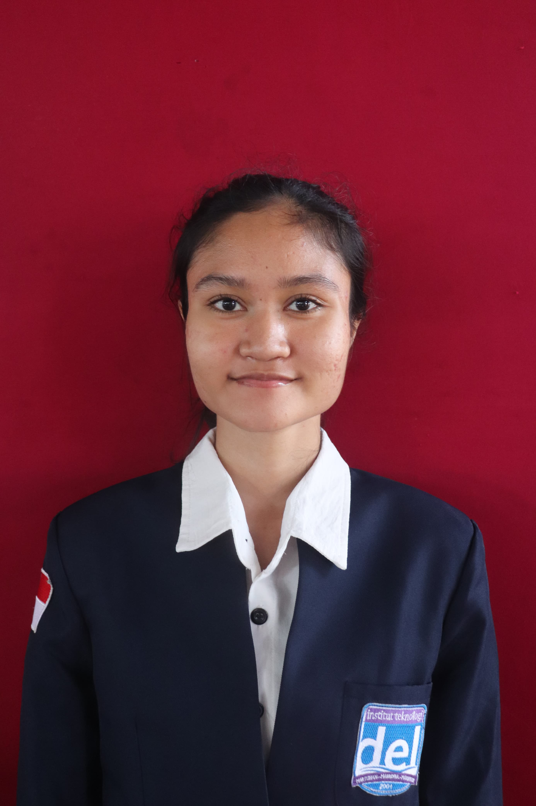

Portofolio Pribadi Accessible
Halaman portofolio single-page ini sendiri — dibangun sesuai standar semantik HTML5 dan estetika modern.
- HTML5
- CSS3
- JavaScript
- Aksesibilitas WCAG 2.2
Peran: Perancang & Pengembang Tunggal
Lihat Proyek →Mahasiswa Sistem Informasi · Calon iOS Developer & Full Stack Developer
Saya mahasiswa Program Studi Sistem Informasi di Institut Teknologi Del dengan minat besar mendalami sisi front end pada pengembangan full stack. Saya senang membangun antarmuka yang rapi, terstruktur, dan nyaman digunakan, sambil tetap aktif berorganisasi dan mengasah kemampuan teknis lewat proyek nyata.

Kombinasi tools yang saya gunakan sehari-hari dan hal-hal yang bisa saya kerjakan dengannya.
Dikelompokkan berdasarkan cara pengerjaannya: mandiri atau bersama tim.
Halaman portofolio single-page ini sendiri — dibangun sesuai standar semantik HTML5 dan estetika modern.
Peran: Perancang & Pengembang Tunggal
Lihat Proyek →Merancang ulang tampilan landing page untuk sebuah UMKM agar lebih modern dan mudah digunakan calon pelanggan.
Peran: UI/UX & Frontend Developer
Lihat Proyek →Proyek backend untuk pengelolaan data akademik sederhana, dikerjakan sebagai latihan mandiri.
Peran: Backend Developer
Lihat Proyek →Komponen kartu profil pengembang dengan styling modern, dibuat pada sesi praktikum Pemrograman dan Pengujian Web.
Peran: Frontend Developer
Lihat Proyek →Dashboard visualisasi data aktivitas dan capaian mahasiswa, dikerjakan bersama tim kelompok.
Peran: Frontend Developer & Visualisasi Data
Lihat Proyek →Sistem penitipan paket mahasiswa di Rumah Makan Anugerah, proyek kelompok mata kuliah Pemrograman dan Pengujian Web.
Peran: Anggota Tim Pengembang
Lihat Proyek →Laporan analisis lanskap TI untuk skenario korporat logistik, bagian dari mata kuliah Kepemimpinan dan Manajemen Sistem Informasi.
Peran: Anggota Tim — Analisis & Data
Lihat Proyek →| Tahun | Nama Proyek / Matakuliah | Kategori | Status |
|---|---|---|---|
| 2024 | Sistem Informasi Akademik Kampus | Proyek Backend | Selesai |
| 2024 | Kartu Profil Pengembang Interaktif | Praktikum PPW | Selesai |
| 2025 | Redesain Landing Page UMKM | Proyek Independen | Selesai |
| 2025 | Dashboard Analitik Mahasiswa | Proyek Kelompok | Berjalan |
| 2026 | Portofolio Pribadi Accessible | Tugas Mandiri PPW | Berjalan |
| Total 5 proyek/matakuliah tercatat — 3 selesai, 2 masih berjalan. | |||
Riwayat keterlibatan organisasi dan kepanitiaan selama masa studi.
Badan Eksekutif Mahasiswa (BEM), Departemen Pusat Dalam Kampus · Institut Teknologi Del
Mengelola dan memelihara data organisasi, serta berkolaborasi dengan anggota tim untuk menjaga akurasi pengelolaan informasi dan komunikasi yang efektif.
Komisi Pemilihan Umum (KPU) · Pemilihan Ketua & Wakil Ketua BEM
Mendaftar untuk berkontribusi pada aspek administrasi dan pengelolaan data dalam proses pemilihan ketua dan wakil ketua BEM.
Del English Club (DEC) · Institut Teknologi Del
Berpartisipasi dalam kegiatan belajar bahasa Inggris dan diskusi kelompok untuk meningkatkan kemampuan komunikasi melalui sesi interaktif dan pembelajaran kolaboratif.
Menekuni Sistem Informasi dengan minat kuat pada rekayasa perangkat lunak, analisis sistem, dan solusi digital. Terus mengembangkan kemampuan teknis dan analitis melalui proyek akademik, pembelajaran kolaboratif, dan keterlibatan organisasi.
Tuliskan ringkasan singkat mengenai jurusan, prestasi, atau kegiatan yang relevan selama masa SMA di sini.
RevoU · Diterbitkan Jun 2026
Credential ID: CCSE-080626-01-1-00041
Menyelesaikan coding camp daring selama 1 minggu oleh RevoU yang mencakup dasar rekayasa perangkat lunak, HTML, CSS, JavaScript, dan konsep pengembangan web pemula.
Gunakan kartu ini untuk menambahkan penghargaan, kejuaraan, atau pencapaian akademik/non-akademik lainnya.
Terbuka untuk diskusi kolaborasi, magang, maupun sekadar menyapa.